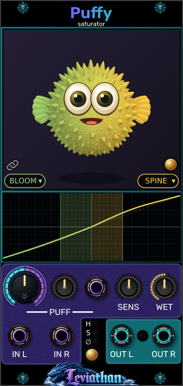
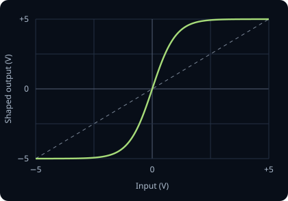
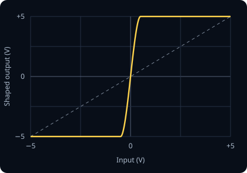
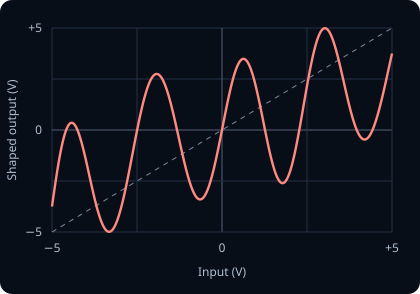
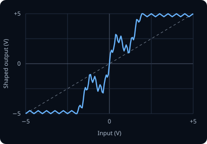
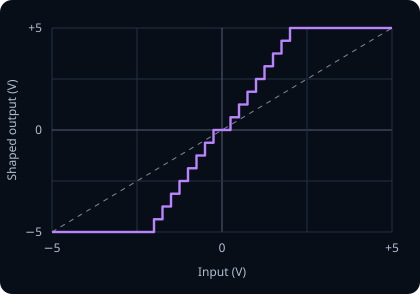
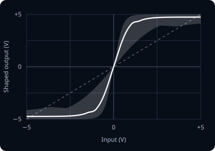
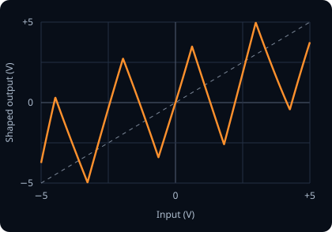

Puffy viewport
Animated feedback
The fish responds to shaping amount, signal activity and limiting. It helps convey intensity, but is not a calibrated meter. Its animation does not modulate the audio.
Leviathan for VCV Rack 2 · Open Source
From soft roundness to folds, grit and restless texture.
A stereo waveshaper with seven characters, independent positive and negative shaping, and a pufferfish that responds to the sound. Turn Puff to change the contour, Sensitivity to push into it, and Wet to blend the result.

First patch
Panel breakdown
Select a numbered marker to jump to its explanation. The pictured character pair is an example, not the default linked BLOOM setting.
Animated feedback
The fish responds to shaping amount, signal activity and limiting. It helps convey intensity, but is not a calibrated meter. Its animation does not modulate the audio.
Lower left / right of viewport
The left menu chooses the negative half of the waveform; the right chooses the positive half. These are not left/right channel selectors. Click a menu to choose one of seven characters.
Chain icon
Linked, both polarities use one character and either menu updates both. Unlink to combine different characters. Relinking adopts the left, negative selection.
Gold button at viewport right
Toggle roaming to let Puffy leave the viewport and move around the Rack. A Range slider appears while roaming is enabled. These are visual controls; see Puffy & roaming.
Graph below viewport
Shows the selected shaping curve and live input activity. Horizontal position is input level; vertical position is shaped output. It is not a time-domain waveform. Learn to read it.
Large knob
Sets the base shaping amount from 0–100%. It changes each character’s contour and how strongly it replaces the original. Zero removes the character effect, but does not bypass the remaining signal path.
Small knob and purple jack beside Puff
Patch modulation into the jack and use the bipolar knob to scale or invert it. Center is zero modulation. CV adds to the Puff knob and the result is limited to 0–100%.
Sensitivity knob
Adjusts input gain by approximately −6 to +6 dB, or half to twice the level. Higher settings reach bends, steps and folds sooner. It also affects the unshaped part of the Wet blend.
Rightmost knob
Blends from 0% unshaped to 100% shaped. Start fully wet to learn a character, then pull back for parallel coloration. Sensitivity, DC removal, Auto Deflate and limiting still act after or around this blend.
IN L / IN R
Use both purple bottom jacks for stereo, or either one alone for dual mono. Only channel 1 of each input is read; mix polyphonic voices down before Puffy.
Gold button below H / S / ∅
Each press cycles Hard → Soft → Off. The adjacent lights show the selection. This controls the final linked stereo gain stage, not which waveshaping character is active.
OUT L / OUT R
The cyan jacks carry one audio channel each. The small light between them indicates limiter gain reduction; brighter means more attenuation. It does not report Auto Deflate reduction.
Signal architecture
Sensitivity changes how far the source travels along the transfer curve. A quiet signal may stay near the center; a louder one reaches the shoulders, folds or steps. This is why the same Puff setting can sound gentle on one source and aggressive on another.
Puff alters the character’s drive, folds or quantization and its contribution to the signal. Wet then blends that result with the sensitivity-adjusted input. The blend happens inside the oversampled path, before downsampling and a 5 Hz DC blocker.
Different shapes on the two polarities can create an average offset as well as new harmonics. The DC blocker removes that offset after shaping. It also means Puffy is intended for audio rather than transparent DC control-voltage processing.
Auto Deflate can reduce extra energy introduced by shaping. The final limiter then controls peaks in both channels together. These stages can change the apparent punch even when the transfer curve stays the same.
Character and limiter changes crossfade over about 5 ms. Four-times oversampling reduces aliasing from nonlinear shaping; it does not make every aggressive setting free of aliasing.
Seven characters
Begin with a steady sine or triangle, Sens centered and Wet fully up. Compare at a similar listening level. These descriptions are expected tendencies of the shaping; source level, Puff and the limiter all influence what you hear.
The previews use each character’s panel color and show its shape at full Puff, with the same character on both polarities. They follow the engine’s transfer equations before DC removal, Auto Deflate and limiting. Lower Puff settings soften or reshape these contours; the graphs show voltage mapping, not a waveform over time.
Round and full

A smooth, normalized tanh curve grows more driven as Puff rises.
Listen for: Listen for gentle harmonic thickening, rounded peaks and a fuller sustained body. A useful starting point for warming a voice or adding density to a bus.
Firm and forward

A cubic soft-clipping curve reaches flat rails, with a steeper drive increase than BLOOM.
Listen for: Expect a stronger edge and more obvious flattening at high Puff. Drums can become denser; sustained tones can acquire a more insistent buzz.
Fluid folds

A phase-skewed sine-fold curve develops more lobes as Puff rises. It is intentionally asymmetric.
Listen for: Listen for bright, rippling or hollow harmonic changes as input level moves through folds. Increasing Puff can rearrange the tone rather than simply making it louder.
Ridged and complex

A fixed, irregular multi-scale fold contour gains drive, with small inward notches continuing along the saturated edges.
Listen for: Expect textured, grainy harmonics with several changes of direction as level rises. Simple tones expose its detail; busy material can become rough and dense.
Stepped and coarse

Amplitude quantization grows coarser with Puff, reaching eight positive treads before the rail at full amount, mirrored on the negative side.
Listen for: Listen for a digital, stair-stepped rasp. Quiet details can fall into the center step and disappear at strong settings. This is amplitude quantization, not a sample-rate reduction effect.
Restless and fuzzy

A BLOOM-like contour is disturbed by signal-dependent random drive and rail variation. Higher Puff increases scatter and its faster component.
Listen for: Expect a moving, noisy texture around the source instead of a perfectly repeatable static curve. Silence stays silent: SWARM perturbs incoming audio rather than generating a free-running noise output.
Angular folds

Uses a triangle-fold contour with the same phase skew and polarity-bias structure as FRENZY.
Listen for: Listen for sharper, more angular edges than the sine-based folding. It can add a cutting buzz or metallic character, especially on simple oscillators.
Polarity shaping
The left character menu processes negative samples; the right processes positive samples. Both audio channels use that same pairing. With Link enabled, either menu selects the character for both polarities. With Link disabled, choose each independently.
Try BLOOM on the negative side and SPINE on the positive side. One half rounds gently while the other pushes toward a firmer edge. That imbalance changes the harmonic balance and can introduce even harmonics. More extreme pairs, such as VOID with FRENZY, combine steps on one half with folds on the other.
Transfer display
Read the graph as input voltage across the horizontal axis and shaped output vertically, centered on zero. Its visible domain corresponds to approximately −5 to +5 V. A straight diagonal represents unchanged amplitude; bends alter harmonic content, plateaus flatten peaks, and reversals fold the waveform.
The curve follows the character pair and effective Puff amount. Colored activity fills show how far the sensitivity-adjusted input reaches on each polarity. With both inputs connected, separate activity lanes represent the channels. Raising Sens can move the activity farther along an unchanged curve.
The curve previews the character shaper, not the entire output chain. Wet, DC removal, Auto Deflate and limiter gain are not folded into that line. SWARM adds a point cloud around a representative curve to show its range of variation.
Output dynamics
The default. When the larger output-channel peak exceeds 5 V, both channels are attenuated together to hold the sample peak to that level in the settled Hard mode. Reduction starts immediately and recovers with an approximately 50 ms release. Listen for firmer peak control and reduced attack contrast when driven hard.
Begins reducing peaks above 4 V with a smooth knee that approaches 5 V. It acts earlier and more gradually than Hard. Listen for a gentler transition into peak control, with more rounding before the nominal rail.
Removes final limiter attenuation. The waveshaper still operates, and output can exceed ±5 V. This lets the next module receive the shaped dynamics directly. Mode transitions are crossfaded, so do not treat a transition from Off as an instantaneous ceiling switch.
Enable from the right-click menu. It compares stereo energy before and after the shaping path, then turns down added energy. It can only attenuate: it does not lift an energy-reducing character to match the input. It follows level over time, easing in reduction faster than it releases it, and holds its target through silence or strong transients.
Use Auto Deflate when added loudness makes it hard to judge the coloration. Its reference is the sensitivity-adjusted input, so it does not undo the Sens control. It is not an exact perceived-loudness match, and the limiter can still reduce peaks afterward. Puffy’s limiter is sample-peak control, not a lookahead true-peak mastering limiter.
Modulation
The Puff CV jack adds modulation to the large Puff knob through a bipolar amount control. Center the small knob for no modulation; turn clockwise for positive depth or counterclockwise to invert it.
For example, set Puff to 50%, CV amount to +50%, and use a ±5 V LFO: the target moves between 25% and 75%. Parameters are smoothed on roughly a 1 ms timescale, so slow envelopes and LFOs are the clearest starting point.
Listening patches
Start with linked BLOOM at low-to-moderate Puff. Raise Sens until the note’s body fills out, then lower Wet if the original attack becomes too rounded. Compare Auto Deflate on and off at a matched monitoring level.
Select SPINE with Hard limiting. Increase Puff to hear the edge clearly, then reduce Wet to bring transient shape back into the blend. If the final limiter still flattens the combined result, reduce Sens or the incoming level.
Feed a sine or triangle into FRENZY or TEETH. Set Puff near the middle and add a modest slow LFO through Puff CV. Listen for harmonic movement as the curve changes; reduce CV depth if it spends too much time pinned at an endpoint.
Choose VOID at higher Puff. Listen to note tails becoming coarse or dropping out as they cross quantization steps. Lower Puff for finer steps, or lower Wet to restore detail underneath.
Unlink the characters and combine BLOOM with SPINE, then try RIPTIDE on one polarity. Keep Wet moderate at first. The difference is in waveform shape, not stereo panning.
Use SWARM on a sustained tone and raise Puff gradually. Its smooth underlying shape gains more restless scatter. Pull Wet back for movement around a stable core.
Animated companion
Inflation and expression respond to processing amount, incoming activity, transients and limiter reduction. Idle movements can continue without audio; movement is not proof that sound is passing.
Click the gold button at the lower-right edge of the viewport, or choose Roaming Mode from the right-click menu, to let Puffy move beyond the panel. The Range slider appears while roaming is enabled; drag it to adjust the allowed roaming distance. Turn Roam off to return Puffy to the viewport. Roaming and its range have no effect on audio.
Troubleshooting
The CV amount knob defaults to zero. Raise its depth, and leave room around the base Puff setting so modulation is not clamped at 0% or 100%. Only channel 1 of the CV input is used.
Wet removes the character contribution, but the signal still passes through Sensitivity, resampling, DC removal, optional Auto Deflate and the final limiter. Use Rack’s module bypass for direct dry routing.
Normal operation copies a lone input to both channels. Rack bypass uses direct L→L and R→R routing, so a single cable is not duplicated there.
VOID can remove low-level detail through quantization, folds can reduce energy, and the limiter or Auto Deflate can attenuate. Reduce Puff or restore some unshaped signal with Wet. Auto Deflate never boosts a quieter result.
The polarity link is enabled. Click the chain icon to choose different negative and positive characters.
Activity shows input reach, while the curve shows the shaping choice. Low Puff, low Wet or a source confined to a nearly straight region can produce only a small audible change. Compare at a consistent monitoring level.
Reference
Checked against local Leviathan-Rack2 Puffy module, engine, widget and transfer-preview implementations, October 2026. Sound descriptions are expected tendencies from the processing rather than listening-test measurements.